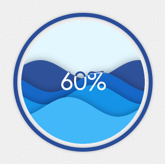
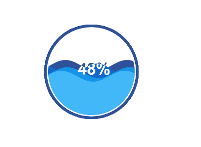
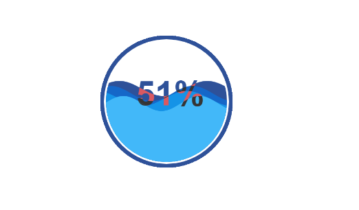

原文连接:https://www.cnblogs.com/dashnowords/p/10692243.html

示例代码托管在：http://www.github.com/dashnowords/blogs
博客园地址：《大史住在大前端》原创博文目录
华为云社区地址：【你要的前端打怪升级指南】
一. 任务说明
使用原生canvasAPI绘制水球图，这将是一个非常有意思的挑战任务。水球图是一种常见的加载动画，属于扩展图形，在echarts中使用时需要下载扩展库（同为扩展库的还包括文字云插件和地图插件,项目地址为https://github.com/ecomfe/echarts-liquidfill）。

二. 重点提示
水球图的绘制有以下几个难点：
水波的绘制
水波的绘制实际上是运用简谐振动公式来模拟的，也就是
x = A*(wt +φ),其中振幅A决定了水波的波纹高低，角频率w决定了水波的快慢，相位φ决定了初始位移差，再加上一些y轴方向的位移偏差和颜色的差异，就可以模拟出不同的水波，接着只需要在帧动画中不断改变φ并重绘曲线，就可以模拟出水波效果了。球形剪裁区域
水波的范围是不能流出球形的外轮廓的，此处的做法是在绘制水波之前，先使用
context.clip( )方法将水波的可见绘图区域控制在水球之内即可，如果还有水球外的图形需要绘制，记得在每一帧绘制完水波后调用context.restore( )取消掉之前的剪裁。文字的绘制
如果只是绘制漂浮于水球图之上的文字，是比较容易实现的，但是如果想要实现一些细节更丰富的效果，并不那么容易。我们期望实现的效果是，当文字未被水波浸入时，显示水纹的蓝色，而被水浸润的部分显示为白色，这样看起来更加生动。但是绘制起来却并不容易，如果将文字绘制成蓝色，那么被水淹没的部分就会消失在水纹中，如果绘制成白色，那么水纹高度较小时，会完全看不到文字。那么这样的渲染文字要如何实现呢？
三. 示例代码
let options = {
value:0,
a:20,//振幅
pos:[300,300],//水球图位置
r:160,//水球图半径
color:['#2E5199','#1567c8','#1593E7','#42B8F9']//水纹颜色
};
start(options);
/**
* 绘制水球图
*/
function start(options) {
//移动绘图坐标至水球图左边界点
context.translate(options.pos[0],options.pos[1]);
context.font = 'bold 60px Arial';
context.textAlign='center';
context.textBaseLine = 'baseline';
//计算水球图绘图数据
createParams(options);
//开启帧动画
requestAnimationFrame(startAnim);
}
//生成水波动画参数，位置坐标公式为 y = A * (wt + φ)
function createParams(options) {
options.w = [];//存储水波的角速度
options.theta = [];//存储每条水波的位移
for(let i = 0; i < 4; i++){
options.w.push(Math.PI /(100 + 20*Math.random()));
options.theta.push(20*Math.random());
}
}
//绘制水波线
function drawWaterLines(options) {
let offset;
let A = options.a;//正弦曲线振幅
let y,x,w,theta;
let r = options.r;
//遍历每一条水纹理
for(let line = 0; line < 4; line++){
context.save();
//每次绘制时水波的偏移距离
theta = Math.random();
offset = r + A / 2 - (r*19/8 + A) * (options.value / 100 ) + line * r/12;
//获取正弦曲线计算参数
w = options.w[line];
theta = options.theta[line];
context.fillStyle = options.color[line];
context.moveTo(0,0);
context.beginPath();
//以0.1为步长绘制正弦曲线
for(x = 0; x <= 2*r; x+=0.1){
y = A * Math.sin(w * x + theta) + offset;
//绘制点
context.lineTo(x,y);
}
//绘制为超出水球范围的封闭图形
context.lineTo(x,r);
context.lineTo(x - 2 * r,r);
context.lineTo(0, A * Math.sin(theta) - options.height);
context.closePath();
//填充封闭图形得到一条水波
context.fill();
//截取水波范围，绘制文字（此处将在后文解释）
context.clip();
context.fillStyle = 'white';
context.fillText(parseInt(options.value,10) + '%',options.r + 10,10);
context.restore();
}
}
//绘制最底层文字
function drawText1(options) {
context.fillStyle = options.color[0];
context.fillText(parseInt(options.value,10) + '%',options.r + 10,10);
}
//帧动画循环
function startAnim() {
//用位移变化模拟水波
options.theta = options.theta.map(item=>item-0.03);
//用百分比进度计算水波的高度
options.value += options.value > 100 ? 0:0.1;
context.save();
resetClip(options);//剪切绘图区
drawText1(options);//绘制蓝色文字
drawWaterLines(options);//绘制水波线
context.restore();
requestAnimationFrame(startAnim);
}
/**设置水球范围为剪裁区域
*(本例中并没有水球以外的部分需要绘制，实际上这里不需要加入帧动画循环中，只需要在开头设置一次即可。)
*/
function resetClip(options) {
let r = options.r;
context.strokeStyle = '#2E5199';
context.fillStyle = 'white';
context.lineWidth = 10;
context.beginPath();
context.arc(r, 0, r + 10, 0, 2*Math.PI, false);
context.closePath();
context.fill();
context.stroke();
context.beginPath();
context.arc(r, 0, r, 0, 2*Math.PI, true);
context.clip();
}浏览器中可查看效果：

四. 文字淹水效果的实现
文字淹水效果的绘制实际上是按照如下思路来进行的：
- 首先绘制与最上层水纹颜色一致的文字，这样在被水淹没之前，文字都可以以可见的颜色显示。
- 在绘制水波的过程中，连线完成后调用
context.clip( )方法将绘图区域剪裁为所有浸水部分，此时再将填充色设置为白色，接着在同一个位置渲染文字，这样渲染出的白色文字不会超出水纹的范围，那么水纹之外的文字的蓝色部分也就被保存在画布上了。 - 为了避免文字中白色的部分被下一层水纹绘制时截断，我们需要在每一层水纹绘制后，都重复步骤2，将该层水纹到水球底部的所有范围设置为剪裁区域，然后绘制该层水纹以内的白色文字部分，这样当几层水纹都绘制完毕后，文字淹水的部分就都会被染成白色。
- 在这样的绘制方法中，文字的最终效果相当于是逐层绘制出来的片段拼接起来的，每次绘制中能被保存到最后的部分，都只有和当前层的水纹相交的部分。
如果我们将每一层文字的绘制颜色修改一下，就比较容易理解绘制过程：

五. 关于canvas抗锯齿
如果仔细查看上面的水球外圆，会发现水球图的外侧不是很平整，看起来会有很多锯齿。网上查到的方法大多是将画布画布尺寸(canvas.height,canvas.width)调整为元素尺寸（CSS中设置的canvas元素的尺寸）的3-4倍，希望利用缩放来达到抗锯齿的作用，但实测的结果却并没有明显改进，利用画布尺寸来缩放在解决图像和填充模糊的时候效果较好，但在抗锯齿方面的作用似乎与线条本身的尺寸仍有关系，不是一种绝对有效的方案。另一种较为有效的方案，是在绘制外圆时增加2px-4px的深色阴影，在视觉上可以很好地弱化锯齿感。
//在绘制外圆之前添加如下代码
context.shadowColor = '#2E5199';
context.shadowBlur = 2;
context.shadowOffsetX = 0;
context.shadowOffsetY = 2;六. 小结
至此，我们在这个系列中完成了所有基本图表的原生API绘制，一些相对高级的图表，其绘制过程并不一定很复杂，比如矩形树图，绘制起来实际上都是矩形方块，但却有助于我们以某种更直观更具有表现力的方式来观察数据，例如可视化呈现webpack的打包结果。数据可视化的基本任务就是让数据变得可视，这需要我们为想观察的数据选出恰当的表现方式，这不是纯粹靠技术能够达到的，也需要一些艺术细胞和想象力。但无论如何，这都是一个值得研究的有趣的方向。